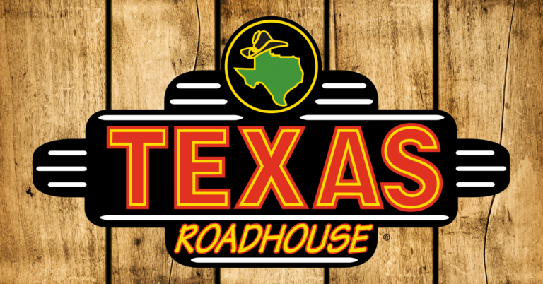
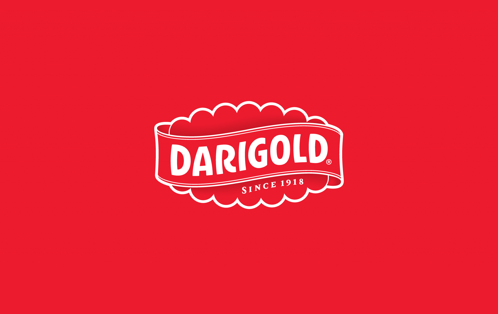
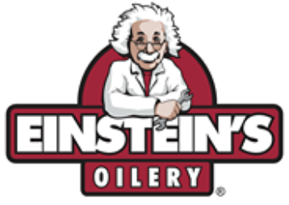

Roadie
I am working as a server at Texas Roadhouse in Nampa. My first jobs were at KFC and GNC and I enjoy customer service. The greatest benefits
of this job is the flexible hours and the duration of the shifts: I am able to only work 4 or 5 days a week to make time for school, and
the shifts last around 5 to 6 hours.
Bulk Receiver

For the last few years I worked at Darigold in Caldwell. My position was a receiver in the raw materials area, where we received heavy cream
and milk directly from the dairies. It was my responsibility to test for antibodies, check ph levels, and ensure the truck tankers were
within their wash and clean period. I had amazing benefits and was able to accomplish many personal goals during my time with this company,
however I left to pursue my education in programming.

Lube Technician
One of my favorite jobs was Einstein's Oilery. It was here that I expanded my knowledge from my favorite car manufacturers to almost every
vehicle you see driving in Idaho. We serviced commercial trucks, personal vehicles, and some of the city's fleet cars of police vehicles and
emergency ambulances. As well as a broader education of vehicle maintenance, I learned many business skills here and was quickly moving up
within the small company. Unfortunately Einstein's Oilery was sold to Valvoline and I decided to look at other career paths.